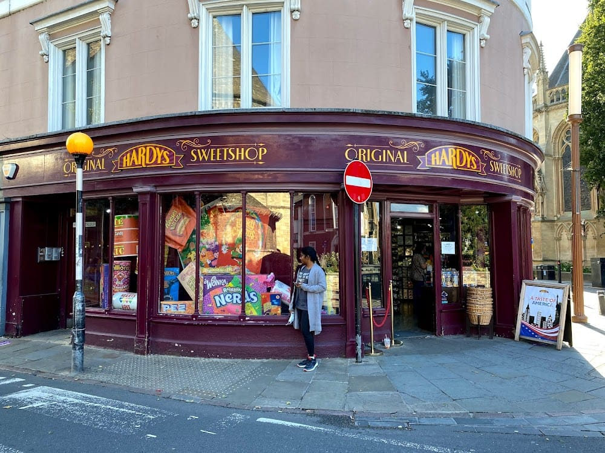

After our long journey from Wales, we finally arrived in Cambridge. It was strange at first to settle into a completely new place, but also exciting to begin life in a city with so much history and energy.
Cambridge was especially meaningful because my mom was studying at the University of Cambridge. Now it would become our shared home.
We moved into our house on Histon Road, where we began unpacking and adjusting to everyday life in a new country.
The city quickly became familiar. It is a magical place, filled with bicycles, quiet streets, and beautiful old buildings.
My favorite place of all in Cambridge was Hardy's Sweet Shop.
